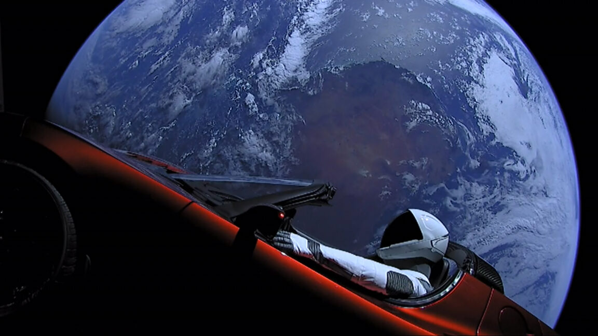

Technology · 22 Oct 2026
Merging SpaceX and Tesla would be a "good idea," Musk says

"I do think there's a lot of merit to combining the companies."
Multiple independent publishers are reporting on the same development: Merging SpaceX and Tesla would be a "good idea," Musk says.
The available reports place the development in the Technology category. The accounts were compared for agreement on the central event rather than simply shared names or broad topics.
One of the available reports describes the development this way: "I do think there's a lot of merit to combining the companies."
Readers should consult the linked source reports for additional context, updates and details that may change as the story develops.
Sources
This article was produced by the C. O. Eric AI Newsroom from the cited sources. It is published only after automated evidence and safety checks.